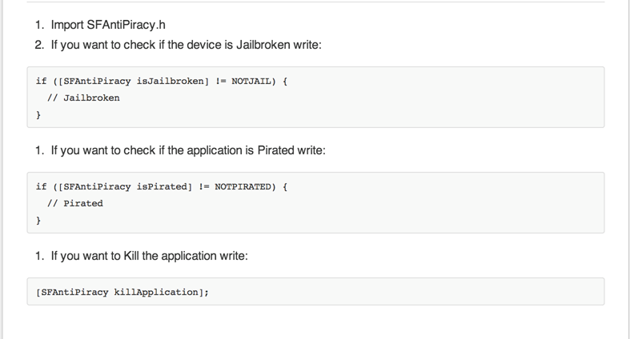
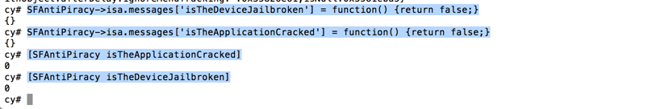

In this article, we will talk about why we shouldn’t completely rely on using third party libraries for securing our apps. Usually, some of the things we try to do in our application are adding checks to detect piracy, jailbroken device etc. It is such a pain to write all the code from scratch which is why we usually resort to using third party libraries that can get the job done for us. In this example, we will be looking at a library named AntiPiracywhich can be found on this url that aims to solve our problem.
On a first glance, it looks amazing .. here is a snippet of the description from it’s github page
The Full Shmoopi Anti-Piracy Library utilizes over a dozen algorithms to detect piracy, (not just four) including: *Signer Identity Checks *Process ID Checks *Plist Checks *Bundled Item Checks (CodeRules, Resources, Etc) *Encryption Checks *Anti-Debugging *Encryption Checks *Anti-Tampering *Binary Checks *Integrity Checks *CRC Checks *MD5/SHA1 Hashing Checks *And much, much more…
Looks great. Here is a screenshot from its Github page that explains the implementation.

Well well ! This looks so simple to bypass. If you have read my previous tutorials on Cycript, you will know that we can simply swizzle the complete implementation for the methods isJailbroken and isPirated by using cycript as shown in the image below.

I think the author has done a great job of building such a comprenhensive list of checks in one method. The mistake is on our side, we shouldn’t just blindly use third party libraries and rely on them for protecting our apps.
So how do me fix this ? Well, honestly there is not way to fix it. But here is one way that will make the job for the attacker much more difficult.
This will make the attacker believe that these methods are not of much significance when he is checking our the class-dump output of our application. Consequently, he will move on to some other classes or view controllers that he thinks are much more important.
So here you go, there is definitely a problem with using third party applications as is without any modification. The things that make the code easily understandable (using proper naming conventions) can actually be the reason for the failure of the application.